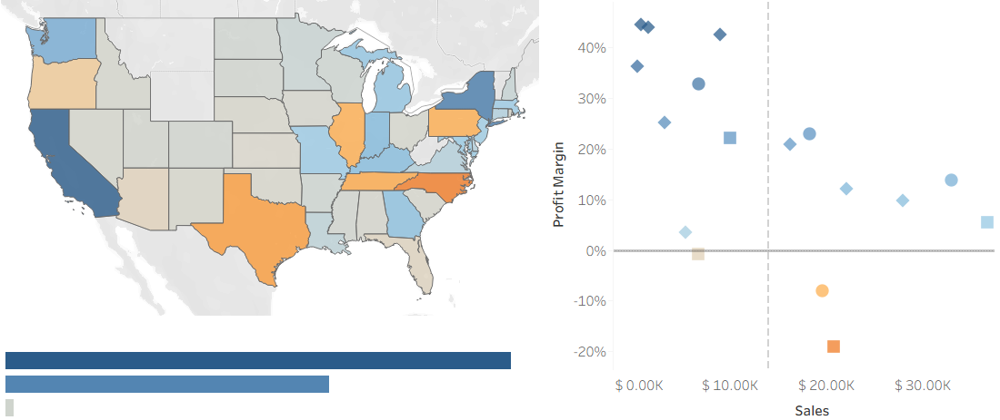
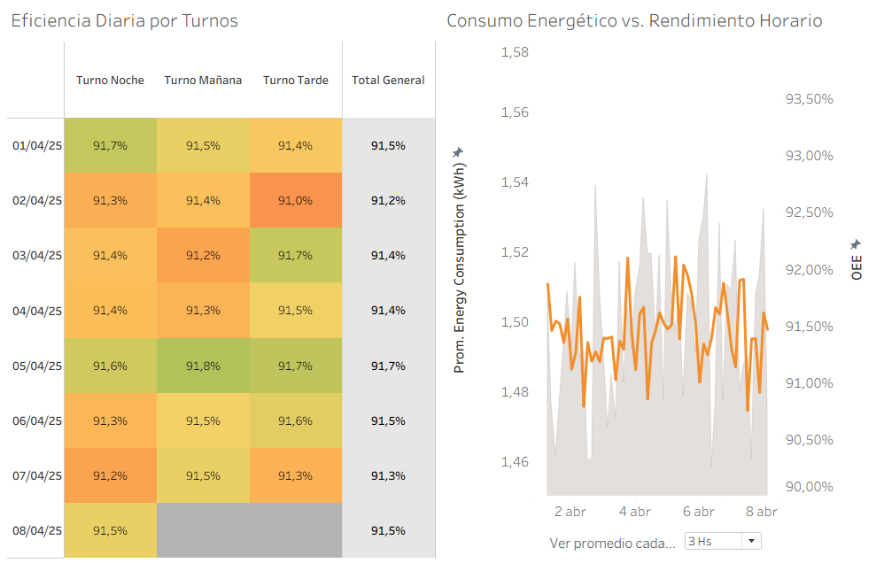
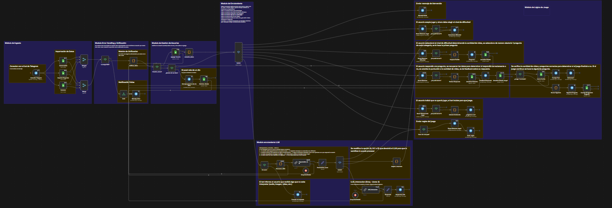

Ingeniero Industrial | Analista de Datos y Optimización de Procesos
Ingeniero Industrial con perfil proactivo, orientado a la mejora continua y a la Excelencia Operacional. Me especializo en la recopilación, limpieza e interpretación de datos para identificar oportunidades de optimización en procesos y flujos de negocio. Experto en el desarrollo de procesos ETL y automatizaciones utilizando Power BI, Power Query y SQL. Cuento con sólida experiencia colaborando en entornos dinámicos y equipos multidisciplinarios, traduciendo insights complejos en acciones estratégicas.
Análisis y ETL: SQL, Python, Power Query.
Visualización: Tableau, Power BI, Excel Avanzado.
Automatización: n8n, VBA.

El Desafío: Identificar por qué sucursales con alto volumen de ventas operaban con márgenes negativos.
El Resultado: A través de un Análisis Exploratorio de Datos (EDA), se detectaron -$4.2K de pérdidas ocultas por políticas de precios destructivas en Carolina del Norte y cuellos de botella logísticos en Texas.
Ver Análisis Completo ➔
El Desafío: Diseñar un sistema de monitoreo para un equipo de producción continua, analizando 10.000 observaciones de sensores a nivel de minuto para detectar ineficiencias.
El Resultado: Mediante Análisis Exploratorio (EDA), se descubrió la frontera operativa empírica de la máquina y que si bien el Rendimiento Global de Equipo es Clase Mundial, solo el 9,7% del tiempo funciona a nivel óptimo.
Ver Análisis y Tableros ➔
El Desafío: Diseñar un flujo automatizado que no solo gestione un juego de trivia con persistencia de datos, sino que también se adapte a la imprevisibilidad humana al recibir comandos de texto libre.
El Resultado: Una arquitectura híbrida en n8n que integra Google Sheets y una orquestación semántica con Llama 3 (Groq). El sistema enruta intenciones, gestiona estados (vidas, puntajes) y responde con sarcasmo a interacciones fuera de contexto.
Ver Arquitectura Completa ➔